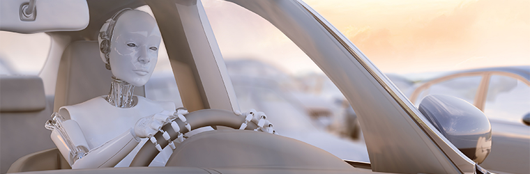

The Dilemma of Self-Driving Cars
An Overview of Self-Driving Cars
"A self-driving car ... is a vehicle that uses a combination of sensors, cameras, radar and artificial intelligence (AI) to travel between destinations without a human operator"
Firstly, what is a self-driving car? A self-driving car, which is also known as an autonomous car, is a vehicle that uses a mixture of software, such as sensors, cameras and artificial intelligence, to travel to various destinations without the operation of a human driver.
Companies making use of this technology:
Many companies that are now creating and manufacturing these self-driving cars include BMW, Ford, Google, Tesla, Waymo, Uber and many more companies. There are various purposes for the company’s creation of these cars.For example, Uber introduced these self-driving cars in their company as a way to earn more profit and cut down costs. Uber is a “ride-share” company that offers many ride options to help people conveniently get to different destinations. The development of self-driving cars is beneficial to Uber, because, for Uber, having a human driver is one of the greatest expenses when “ride-sharing”, taking up “80% of the total mile cost". By eliminating the costs of having a human driver, these self-driving cars will reduce the cost of an Uber ride, and therefore, allow Uber to earn more profit from their rides.
Why were self-driving cars made?
These self-driving cars were made to reduce the number of road-related accidents caused by drivers often driving under the influence, driving when they are drowsy and when they are distracted. Though this development of technology was used to reduce these accidents, self-driving cars are slowly becoming the cause of more and more accidents, due to faulty technology and bugs in the system.
Hardware and Software associated with Self-Driving Cars
Self-driving cars are made with a variety of hardware and software in order to allow the vehicle to safely navigate roads and drive different routes with human drivers. Here are many hardware and software components involved in the making of self-driving cars:
Hardware Components:
Sensors:
Sensors are one of the most important elements of a self-driving car’s hardware components. Sensors consist of cameras, radars, LIDAR (Light Detection and Ranging) sensors and other various types of sensors. These sensors provide “real-time data” and assist the car to view the environment around it, such as obstacles, pedestrians, other vehicles and road markings. Though these sensors were made to prevent collisions with obstacles and pedestrians, there has been faulty sensors that have mistakenly classified pedestrians and obstacles as other objects, causing the car to collide with it. This will be discussed further in the article.-
GPS:
The GPS is another vital part of a self-driven car’s hardware. The GPS allows the vehicle to navigate from two locations from the accurate data the GPS gives the system. Central Computer Components:
According to NVIDIA’s website, here are some other parts of the hardware essential in a self-driving vehicle.- NVIDIA DRIVE Orin. This is a SoC (system-on-a-chip) that is the central computer of NVIDIA’s autonomous vehicles. The DRIVE Orin delivers 254 trillion operations per second (TOPS) and can power “autonomous driving capabilities, confidence views, digital clusters, and AI cockpits”.
- NVIDIA DRIVE Thor. According to NVIDIA’s website, DRIVE Thor is their “next-generation centralized car computer” in which combines “advanced driver assistance” and “in-vehicle infotainment” together on a single system that is safe, as well as secure. The DRIVE Thor also enhances the CPU and GPU for higher performance.
A Quick Summary:
Most hardware components on an autonomous vehicle (or self-driving cars) are vital in ensuring high performance in the system. Hardware components such as sensors, GPS, and many SoCs contribute to ensuring the vehicle display high performance, and most importantly, safety around obstacles and pedestrians.Software Components:
Scene recognition
Scene recognition consists of “driving scenario integration” and its primary aim is to analyse the data from the multiple sensors in order to gain precise “environmental target knowledge”. This allows the vehicle to perform an assessment of the road scenario. This then allows the vehicle to predict the speed of vehicles or objects travelling around the vehicle. This allows the system to then plan a safe route from a location to another location.Decision making
Decision making involves the vehicle’s driving behaviour, which could include lane shifting, overtaking, turning left and right, stopping and starting. Based on the scene recognition, the program in the vehicle can use the generated driving plan and choose what action the vehicle does next, such as turning left when at the junction or switching lanes.
A Quick Summary:
Software components in an autonomous vehicle can allow the machine to develop mapping and decision-making, in order to allow the vehicle to drive without a human driver. These processes work together in order to enable a safe environment around the vehicles and continue to evolve as technology advances.
The Controversy of Self-Driving Cars
"On average, Australians travelled 12,100 km across all vehicles"
Effects of Self-Driving Cars on an Individual
Self-driving cars are very beneficial to an individual through many reasons. This includes more productivity and relaxation, safety, however, can cause negative psychological effects on an individual using self-driving cars, such as breach of trust, and causing individuals to have sedentary lifestyles. According to Budget Direct, the average vehicle in Australia travelled around 33.2km per day. This means that people spend quite a long time in our cars or on the road. One solution to this problem is self-driving cars. By programming the vehicles to take people from one location to another, the individual can instead use the travel time to e.g., finish off work, go on a business call, or even relax or enjoy some entertainment. This allows an individual to be more relaxed and productive.
Self-driving cars also remove the “human” part of driving, which means that the factors of distraction, tiredness and driving under the influence will be removed out of driving and result in more safety.
On the other hand, there are many negative psychological effects of self-driving cars.
Though self-driving cars are helpful and beneficial to an individual, having full trust on artificial intelligence or other pieces of technology to safely transport you to and from a location, can lead to risky situations. As mentioned earlier, technology still continues to advance in autonomous vehicles, meaning that your vehicle could have faulty bugs that can put the passenger in danger. This means that the development of self-driving cars can cause false trust in the individual and complete reliance on AI, which can also lead to many psychological trust issues.
Self-driving cars can also lead to very sedentary lifestyles. These are lifestyles when an individual spends most of their time sitting down, with little or no physical exercise. This lifestyle can lead to many health issues, such as cancer. Self-driving cars can cause people to do less and less physical exercise, as having a car automatically take you somewhere can cause you to develop the habit of sitting and being transported via the autonomous vehicle to another location.
Overall, though self-driving cars can boost relaxation and productivity in an individual, they can also cause negative health impacts.
Effects of Self-Driving Cars on Society
If self-driving cars were viewed as a safer option for transportation, this first causes the number of casualties in vehicle or road-related deaths to decrease. This could affect healthcare services, and also public safety services and could allow emergency services to be able to direct their focus elsewhere. As the casualties involving vehicles reduce, car insurance companies would gain fewer customers, as the vehicles were being controlled by technology and artificial intelligence. However, vehicle insurance would not stop, as it is still important to insure your vehicle in case of an accident. Therefore, self-driving cars can positively affect many public emergency services, however, can cause insurance companies to lose profit and customers.
Legal, Social and Ethical Issues of Self-Driving Cars
Legal:
There have been many cases where self-driving cars have gotten into legal trouble. A well-known example is Tesla. According to this article- a serious accident occurred in March of 2022, where a pedestrian suffered life-threatening injuries when hit by a Tesla Model 3, in which the driver claims that the vehicle was in autopilot mode.
Another example was when, in the US, a Tesla on Autopilot crashed into stationary emergency responder vehicles that had their flashing lights activated. The controversy surrounding the first accident was whether charges would be pressed onto the driver, even though the car was in “autopilot mode”. This is because, if the car made the decision to hit the pedestrian without the consent of the driver, the blame would be on the vehicle.
The ultimate answer is the driver, as they should still keep their eyes on the road though they are not driving. The manufacturer can also face legal trouble (Tesla), as it was their “autonomous” system that caused this accident.
Social:
As mentioned earlier in the article, the introduction of self-driving cars can cause a “Ripple Effect” through society. Many companies develop the vehicles, which are then purchased by many people. This causes changes in the industry, as manual driving cars may become less popular due to the new technology. However, the introduction of this technology could be too “overwhelming” as there are still bugs and faults with the systems, and may not solve the social issues such as less road accidents for emergency services to respond too, which was the purpose of these vehicles.
Ethical:
When discussing self-driving cars, many famous ethical issues come to mind. The most famous of these all is the trolley problem.
Click here to play the Trolley problem!
So, what is the trolley problem? The trolley problem is an experiment where your ethics are questioned in a decision/scenario where a trolley is travelling to a set of railway tracks. There are five people tied up on one end of the track, unable to move, however, on the other side, there is one person on the side track. By pulling the lever, you can divert the tram to kill that one person, saving 5 other people instead.
The question the trolley problem is testing is: which option is the most ethical choice?

So how does this tie in with self-driving cars? Well, for example, an autonomous vehicle had a brake failure, and had two decisions: to swerve into a barricade to kill the passenger, or keep going and kill the pedestrian, which one would it make? This is the problem with self-driving cars. With limited knowledge of their surroundings, we cannot trust autonomous technology to make the right and ethical decision, in case it overrides the human reaction of saving the pedestrian, or themselves.
Ultimately, this sums up some of the ethical issues of autonomous vehicles.
Ethical Ways to Use Self-Driving Cars
So, how can these issues caused by self-driving cars be reduced? Self-driving cars raise many legal issues, such as the dilemma to who is responsible: the driver of the car, in the case of a crash. Self-driving cars can also raise challenges to ethical issues, including the infamous trolley problem.
However, there are safe ways to operate a self-driving car.
- Stay Informed- Know the functions and capability of your self-driving cars.
- Remain Alert and Safe- Make sure you keep your eyes on the road while behind the wheel, regardless of whether you or the car is driving.
- Maintenance- Make sure the vehicle’s systems and cameras are functioning and up to date.
- Follow the Law- Make sure your vehicle is following the traffic laws while driving.
- Be Prepared- Make sure you are prepared to respond in the case of an emergency.
"As autonomous vehicle technology continues to advance, continuous monitoring, improvement, and compliance with regulatory standards will further reinforce the safety assurance in self-driving cars..."
Click here to learn more about how to safely operate self-driving cars.
In conclusion, this is the dilemma of self-driving cars, which should be considered when thinking to use this type of technology and AI.
References
Abu-Khalaf, J., & Haskell-Dowland, P. (2021, November 23). The self-driving trolley problem: how will future AI systems make the most ethical choices for all of us? The Conversation. https://theconversation.com/the-self-driving-trolley-problem-how-will-future-ai-systems-make-the-most-ethical-choices-for-all-of-us-170961
How Self-Driving Cars Will Impact Society | Glass.com. (2019, January 2). Glass.com. https://info.glass.com/how-autonomous-cars-will-impact-society/
Lutkevich, B. (2019, October). What are Self-Driving Cars and How Do They Work? TechTarget. https://www.techtarget.com/searchenterpriseai/definition/driverless-car
Navigating The Future of AI in Self-Driving Cars. (2023, November 9). Udacity. https://www.udacity.com/blog/2023/11/ai-in-self-driving-cars.html#:~:text=AI-powered%20self-driving%20cars%20can%20significantly%20reduce%20the%20number
NVIDIA DRIVE In-Vehicle Computing for Autonomous Vehicles. (n.d.). NVIDIA. Retrieved March 24, 2024, from https://www.nvidia.com/en-in/self-driving-cars/in-vehicle-computing/
Shetty, S. (2020, January 28). Uber’s self-driving cars are a key to its path to profitability. CNBC. https://www.cnbc.com/2020/01/28/ubers-self-driving-cars-are-a-key-to-its-path-to-profitability.html#:~:text=Uber%20plans%20to%20launch%20its%20self-driving%20cars%20i
www.aionlinecourse.com. (n.d.). Hardware and Software Architecture of Self-Driving Cars. Www.aionlinecourse.com. https://www.aionlinecourse.com/tutorial/self-driving-cars/hardware-and-software-architecture-of-self-driving-cars